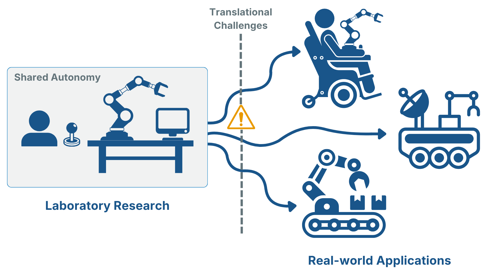

SA2Real: Translating Shared Autonomy to the Real World
Proposal in preparation. Date and venue to be confirmed.
Shared autonomy (SA) combines user input with robot assistance. Although research in shared autonomy continues to progress, translating these systems from controlled laboratory settings to real-world use remains challenging. Systems that work well in controlled settings may still lack capabilities needed in practice.

Assumptions about users, tasks, environments, robot capabilities, and how user input is combined with robot assistance can help simplify research problems. However, when these assumptions do not hold in real-world settings, they may restrict what shared autonomy systems can provide.
SA2Real brings together researchers and practitioners from academia and industry across application domains. Through application primers, invited speakers will share experiences and lessons from real-world robotics, providing starting points for participant discussions.
Participants will then work in groups to examine the capabilities shared autonomy systems need, the assumptions that may restrict them, and ways to develop and evaluate these capabilities. Between-group reflections and a concluding panel will help identify common and domain-specific challenges, research directions, and practical recommendations for real-world shared autonomy.
Workshop contributions will be synthesized into a shared online resource, with the aim of supporting continued discussion and collaboration within the shared autonomy community.
Topics of interest
- Capabilities and design goals for shared autonomy systems in real-world use.
- Cross-domain and domain-specific capability requirements.
- Assumptions about users, robots, tasks, and environments, and their consequences in practice.
- Experiences from developing, evaluating, and deploying shared autonomy systems.
- Research directions and approaches for evaluating real-world shared autonomy.
We welcome students, researchers, practitioners, and anyone interested in SA across robot platforms and application domains. See Get involved for participation details.
Important dates
- Submission deadline: To be announced
- Notification of acceptance: To be announced
- Workshop date: To be announced
- Planned format: Half-day, hybrid